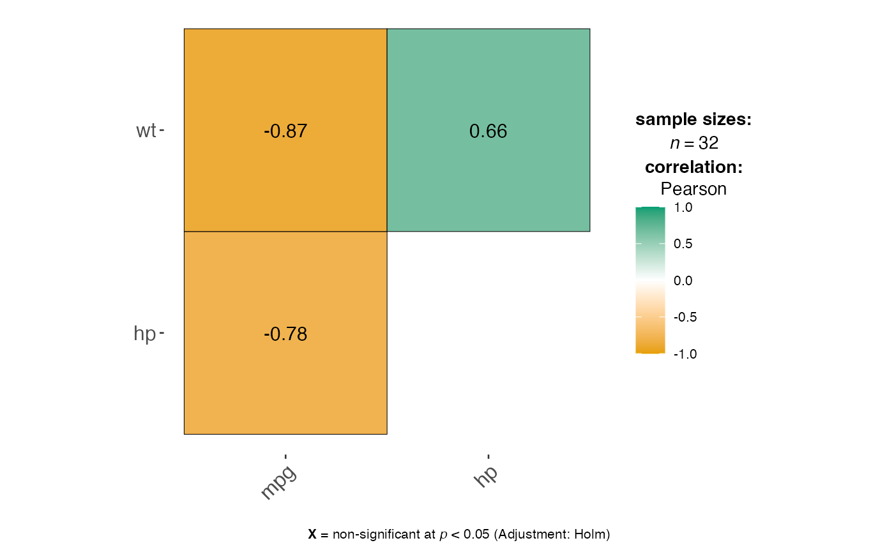
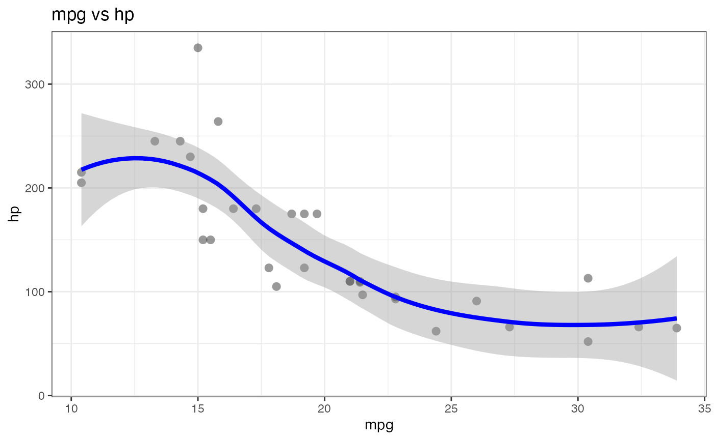

Correlations and Scatter Plots
Source:vignettes/legacy/10-correlations-scatterplots-legacy.Rmd
10-correlations-scatterplots-legacy.RmdThis vignette covers jjcorrmat() for creating
correlation matrices and jjscatterstats() for scatter
plots.
Correlation matrices with jjcorrmat()
jjcorrmat() visualises pairwise correlations between
numeric variables and reports the associated tests. Here we look at the
relationships between mpg, hp and
wt in the mtcars data.
jjcorrmat(data = mtcars, dep = c(mpg, hp, wt), grvar = NULL)
#>
#> CORRELATION MATRIX
#>
#> Preparing correlation analysis options...
#>
#> character(0)
#> Warning: The `size` argument of `element_line()` is deprecated as of ggplot2 3.4.0.
#> ℹ Please use the `linewidth` argument instead.
#> ℹ The deprecated feature was likely used in the jmvcore package.
#> Please report the issue at <https://github.com/jamovi/jmvcore/issues>.
#> This warning is displayed once every 8 hours.
#> Call `lifecycle::last_lifecycle_warnings()` to see where this warning was
#> generated.
Scatter plots with jjscatterstats()
jjscatterstats() produces a scatter plot with a
regression line and textual output describing the correlation and
regression statistics.
jjscatterstats(data = mtcars, dep = mpg, group = hp, grvar = NULL)
#>
#> SCATTER PLOT
#>
#> You have selected to use a scatter plot with correlation analysis.